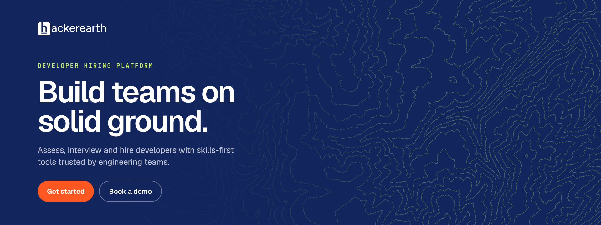

Five examples across web, social, email and video. Each layout uses one terrain, one colour pairing and at most one highlight contour, and keeps the lines behind the message.

Website hero1920 × 720Contour · Portland, ORLime on Navy · 32%